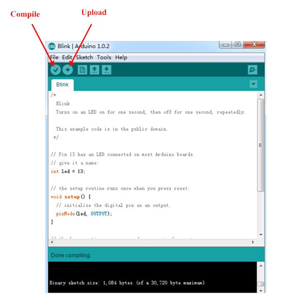

Generally, teacher will teach us to write a simple Hello World example when start to learn a programming language. This is only a basic introductory，but it is a very important process. Although you are not familiar about Arduino, do not worry. You can learn the hello world about Arduino: light up a LED. Now we take Seeeduino as example to learn how to light up a LED which is controlled by Digital 13 pin. Before doing this, please make sure that you have downloaded the Arduino Environment and installed the Seeeduino Driver successfully. If not, please click here to learn the specific steps.
Connect the Seeeduino board to your computer using the USB cable. The green power LED (labeled PWR) should go on. (When Seeeduino works independently, you can select USB or power adapter to power for Seeeduino.)
Open the LED blink example sketch: File>Examples>01.Basics>Blink.

You'll need to select the entry in the Tools > Board menu that corresponds to your Arduino. 在Here we need to select ATmega328.

Select the serial device of the Arduino board from the Tools | Serial Port menu.

Now, simply click the "Upload" button in the environment. Wait a few seconds - you should see the RX and TX leds on the board flashing. If the upload is successful, the message "Done uploading." will appear in the status bar.

A few seconds after the upload finishes, you should see the pin 13 (L) LED on the board start to blink (in orange). If it does, congratulations! You've gotten Arduino up-and-running.